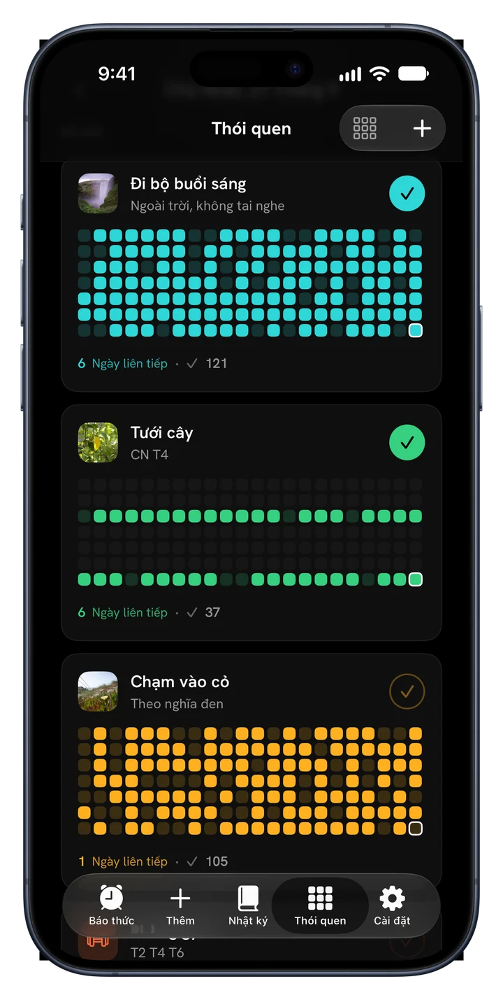
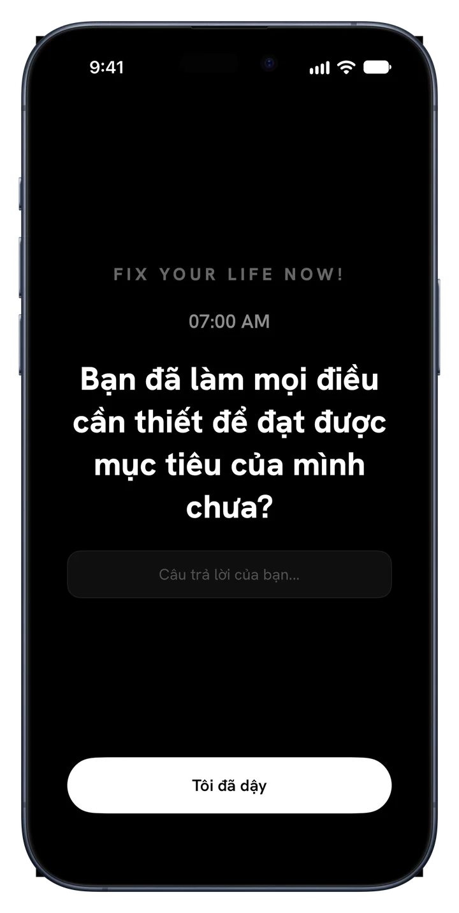
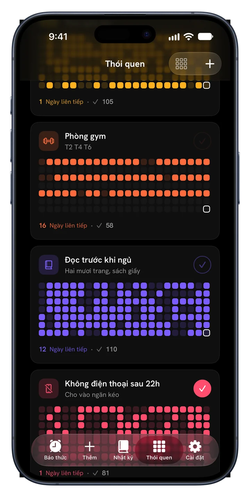
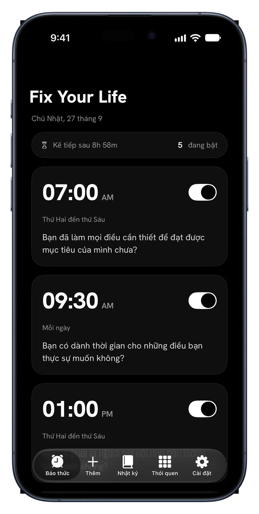
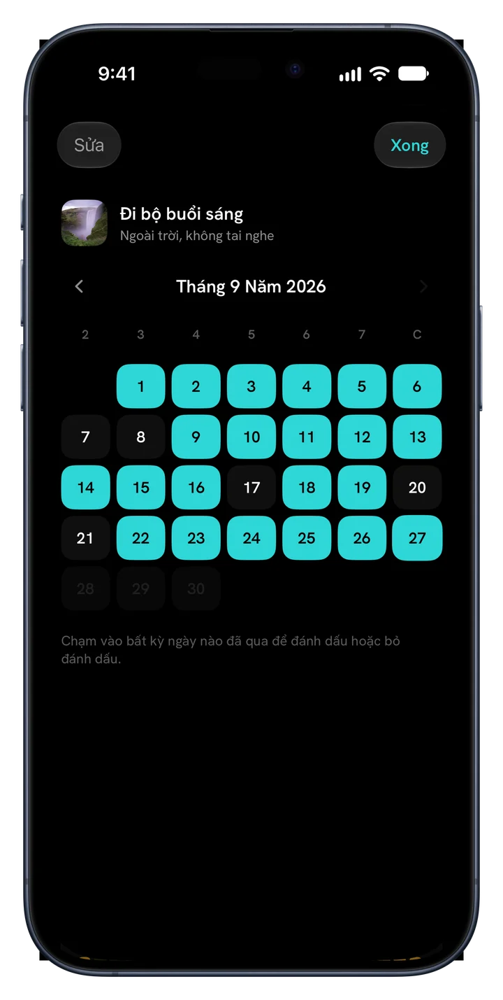
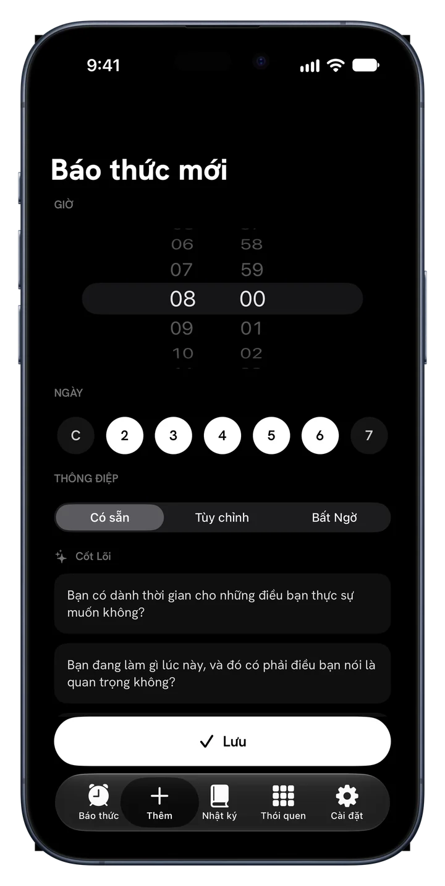
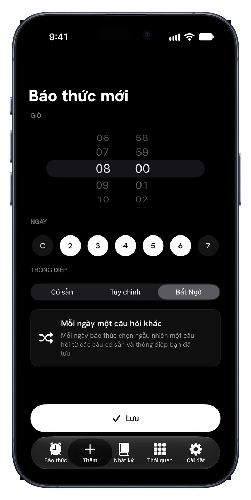
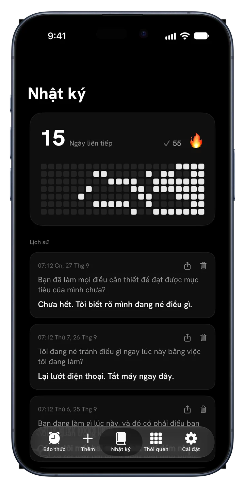
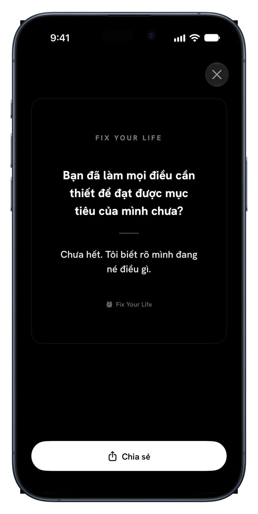

Đi bộ buổi sáng
Mỗi ngàyNửa năm, mỗi ngày một ô
Fix Your Life đánh thức bạn bằng một câu hỏi không thể hoãn, rồi giúp bạn giữ những gì đã quyết định: thói quen với ảnh của riêng bạn, chuỗi ngày và cả năm đầy màu sắc.
Tải miễn phí · Một báo thức và một thói quen miễn phí, mãi mãi · Không quảng cáo. Không bao giờ.



Mới · Thói quen
Thêm những điều bạn thật sự muốn giữ. Cho mỗi điều một gương mặt, đánh dấu và nhìn chuỗi ngày lớn dần trong màu riêng của nó.


Nửa năm, mỗi ngày một ô
Nửa năm, mỗi ngày một ô
Nửa năm, mỗi ngày một ô
Bên trong ứng dụng
Mỗi màn hình chỉ làm một việc: đánh thức bạn trước chính cuộc đời mình.
Báo thức có ý nghĩa
Đặt báo thức vào bất kỳ giờ nào, ngày nào. Mỗi báo thức mang một câu hỏi thay vì tiếng ồn bạn tắt rồi quên. Trả lời trong một dòng, và ngày mới bắt đầu thật thà.

34 câu hỏi · 6 gói
Cốt Lõi, Tham Vọng, Thời Gian và Cái Chết, Bản Sắc, Tấm Gương Thành Thật và Sự Sống Động. Đây không phải lời tự khẳng định. Đây là những câu hỏi bạn vẫn né tránh. Hoặc tự viết câu của bạn.

Chế độ Bất Ngờ
Lặp lại sẽ thành tiếng ồn nền. Chế độ Bất Ngờ chọn một câu hỏi mới cho mỗi ngày trong tuần, để báo thức không bao giờ cùn đi.

Nhật ký biết hỏi trước
Mỗi câu trả lời được lưu cùng câu hỏi và ngày. Chuỗi ngày, bản đồ nhiệt và lịch sử đều ở đó, để sự đều đặn trở thành thứ bạn nhìn thấy được.

Widget
Chuỗi ngày và câu hỏi hôm nay, để điều đầu tiên bạn thấy là điều bạn vẫn né tránh.

Chia sẻ thành quả
Biến bất kỳ câu trả lời nào thành một tấm thẻ gọn gàng và chia sẻ ở bất cứ đâu. Câu trả lời là bằng chứng bạn đã có mặt, và vài câu xứng đáng được thấy ánh sáng.
Cách hoạt động
Kế hoạch sẵn sàng trước khi hết phút đầu tiên.
Buổi sáng, kỷ luật, sức khỏe, tập trung, thời gian màn hình hay giấc ngủ. Kế hoạch được xây quanh chúng.
Chọn giờ. Báo thức reo mỗi ngày với câu hỏi hợp với lựa chọn của bạn.
Nhỏ, hằng ngày và của bạn. Thêm ảnh, chọn màu, đánh dấu.
Mỗi ngày giữ được thắp sáng một ô. Lỡ một ngày là thấy ngay. Cứ tiếp tục, cả năm sẽ ngập màu.
Giá
Một báo thức và một thói quen miễn phí mãi mãi, đủ mọi tính năng. Premium dành cho việc duy trì cả một ngày.
$0 mãi mãi
Không cần thẻ, không cần dùng thử
$17.99 / năm
3 ngày miễn phí · khoảng $0.35 mỗi tuần
$39.99 một lần
Trả một lần, không đăng ký
Cũng có gói tuần giá $4.99. Giá tính bằng đô la Mỹ; App Store hiển thị giá cho quốc gia của bạn. Dùng thử miễn phí dành cho người đăng ký mới gói năm.
Hỏi đáp
“Nếu ai đó quay phim hai giờ vừa qua của đời bạn, họ có kết luận rằng bạn muốn điều bạn nói là mình muốn không?”
Một câu hỏi mỗi sáng. Một ô mỗi ngày. Đó là cách một năm đổi màu.
Tải về trênApp StoreTải miễn phí · 45 ngôn ngữ · Không quảng cáo. Không bao giờ.